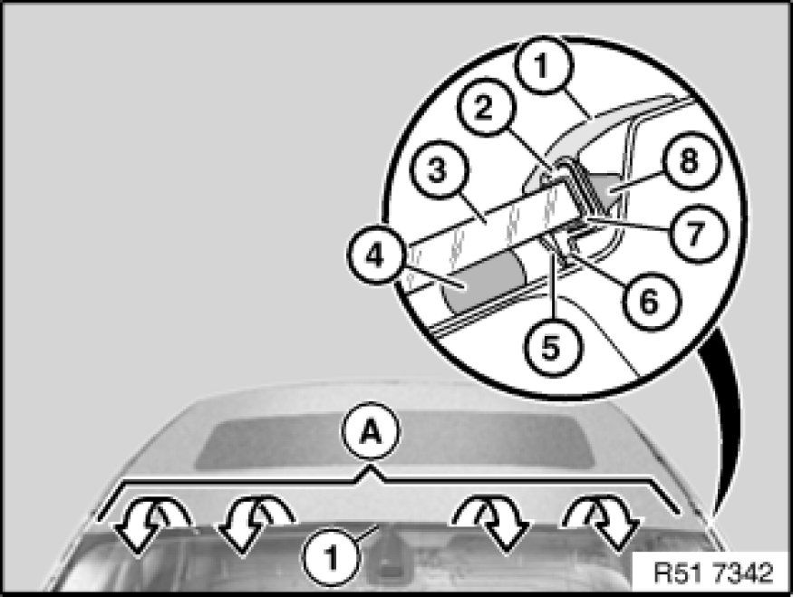
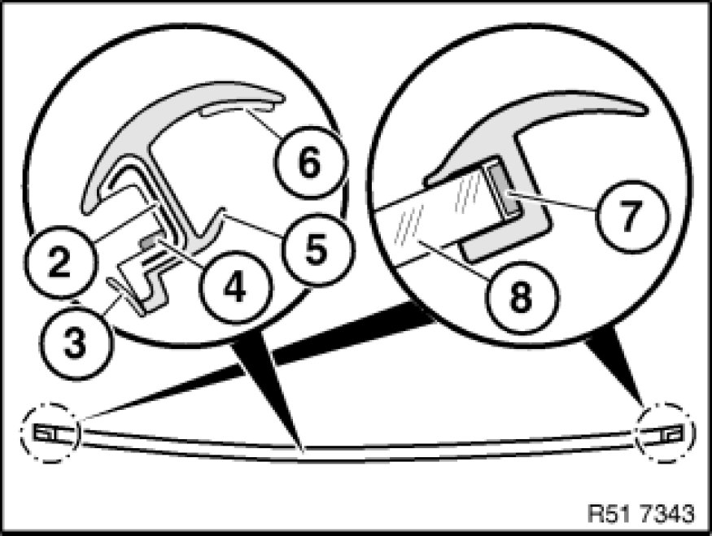

Removing and Installing/Replacing Rubber Frame for Windscreen (Top)
51 31 021 - Removing and installing/replacing rubber frame for windscreen (top)

Necessary preliminary tasks:
- Remove both gutter strips on windscreen Service and Repair

Important!
Rubber frame (1) features an aluminium section inlay (2).
Detach adhesive tape on outside from windscreen and at top from roof outer skin.
Carefully unwind rubber frame (1) (windscreen breakage).
Note:
Spacers (8) are attached to rubber frame (1).
Tear-off lip (5) may be stuck to adhesive (4).
When rubber frame (1) is removed, tear-off lip (5) can tear off and remain in vehicle.
Attach adhesive tape correctly in area (A).
3 - Windscreen
6 - Bridge
7 - Pinched butyl

Installation:
In area (A) on left/right:
- there is no sealing lip (5)
- there is adhesive tape (7) for windscreen (8)
- buffer stop is moulded on
When replacing without removing windscreen:
Detach tear-off lip (3) from rubber frame (1).
If adhesive leaks over tear-off lip (3), this area must be cut out partially.
To facilitate installation, coat rubber frame (1) and body cutout with water.
Replacement with removed/new windscreen:
Fit rubber frame (1) with tear-off lip (3).
2 - Aluminum strip
4 - Butyl
6 - Adhesive tape (for attaching to roof at top)